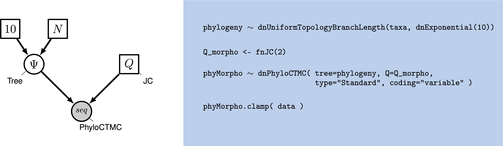

While molecular data have become the default for building phylogenetic trees for many types of evolutionary analysis, morphological data remains important, particularly for analyses involving fossils. The use of morphological data raises special considerations for model-based methods for phylogenetic inference. Morphological data are typically collected to maximize the number of parsimony-informative characters - that is, the characters that provide information in favor of one topology over another. Morphological characters also do not carry common meanings from one character in a matrix to the next; character codings are made arbitrarily. These two factors require extensions to our existing phylogenetic models. Accounting for the complexity of morphological characters remains challenging. This tutorial will provide a discussion of modeling morphological characters, and will demonstrate how to perform Bayesian phylogenetic analysis with morphology using RevBayes (Höhna et al. 2016).
This is the first of six tutorials on discrete morphological character evolution, each building on the previous one:
Each page in this series reuses the tree model (scripts/model_tree.Rev)
introduced below, and only changes the morphological substitution model.

Molecular data forms the basis of most phylogenetic analyses today. However, morphological characters remain relevant: Fossils often provide our only direct observation of extinct biodiversity; DNA degradation can make it difficult or impossible to obtain sufficient molecular data from fragile museum specimens. Using morphological data can help researchers include specimens in their phylogeny that might be left out of a molecular tree.
To understand how morphological characters are modeled, it is important
to understand how characters are collected. Unlike in molecular data,
for which homology is algorithmically determined, homology in a
character is typically assessed by an expert. Biologists will typically
decide what characters are homologous by looking across specimens at the
same structure in multiple taxa; they may also look at the developmental
origin of structures in making this assessment (Phillips 2006). Once
homology is determined, characters are broken down into states, or
different forms a single character can take. The state 0 commonly
refers to absence, meaning that character is not present. In some
codings, absence will mean that character has not evolved in that group.
In others, absence means that that character has not evolved in that
group, and/or that that character has been lost in that group
(Freudenstein 2005). This type of coding is arbitrary, but both
non-random and meaningful, and poses challenges for how we model
the data.
Historically, most phylogenetic analyses using morphological characters have been performed using the maximum parsimony optimality criterion. Maximum parsimony analysis involves proposing trees from the morphological data. Each tree is evaluated according to how many changes it implied in the data, and the tree that requires the fewest changes is preferred. In this way of estimating a tree, a character that does not change, or changes only in one taxon, cannot be used to discriminate between trees (i.e., it does not favor a topology). Therefore, workers with parsimony typically do not collect characters that are parsimony uninformative.
In 2001, Paul Lewis (Lewis 2001) introduced a generalization of the Jukes-Cantor model of sequence evolution for use with morphological data. This model, called the Mk (Markov model, assuming each character is in one of k states) model provided a mathematical formulation that could be used to estimate trees from morphological data in both likelihood and Bayesian frameworks. While this model is a useful step forward, as a generalization of the Jukes-Cantor, it still makes fairly simplistic assumptions. This tutorial series will guide you through estimating a phylogeny with the Mk model, and a series of increasingly realistic extensions to the model, culminating in the covariomorph model in Discrete morphology - The covariomorph model.
The Mk model is a generalization of the Jukes-Cantor model of nucleotide sequence evolution, which we discussed in Nucleotide substitution models. The Q matrix for a two-state Mk model looks like so:
\[Q = \begin{pmatrix} -\mu_0 & \mu_{01} \\ \\ \mu_{10} & -\mu_1 \\ \end{pmatrix} \mbox{ ,}\]This matrix can be expanded to accommodate multi-state data, as well:
\[Q = \begin{pmatrix} -\mu_0 & \mu_{01} & \mu_{02} & \mu_{03} \\ \mu_{10} & -\mu_1 & \mu_{12} & \mu_{13} \\ \mu_{20} & \mu_{21} & -\mu_2 & \mu_{23} \\ \mu_{30} & \mu_{31} & \mu_{32} & -\mu_3 \end{pmatrix} \mbox{ ,}\]However, the Mk model sets transitions to be equal from any state to any other state. In that sense, our multistate matrix really looks like this:
\[Q = \begin{pmatrix} -(k-1)\mu & \mu & \mu & \mu \\ \mu & -(k-1)\mu & \mu & \mu \\ \mu & \mu & -(k-1)\mu & \mu \\ \mu & \mu & \mu & -(k-1)\mu \\ \end{pmatrix} \mbox{ ,}\]Because this is a Jukes-Cantor-like model (Jukes and Cantor 1969), state frequencies do not vary as a model parameter, all characters share the same rate, and that rate does not change over time. The next four tutorials in this series relax these assumptions in turn: page 2 lets the rate vary among characters, page 3 shows how to analyze characters that have different numbers of states, page 4 shows how to model ordered characters, page 5 lets the state frequencies of binary characters vary among characters (and combines this with the partitioning scheme of page 3), and page 5 lets a character’s rate change over time along the tree. These assumptions may seem unrealistic, but all models are a compromise between reality and generalizability. Prior work has demonstrated that, in many conditions, the Mk model (with some extensions) does perform adequately (Wright and Hillis 2014; Mulvey et al. 2025). Because morphological characters do not carry common meaning across sites in a matrix in the way that nucleotide characters do, making assumptions that fit all characters is challenging. A visualization of this simple model can be seen in .
We will first perform a phylogenetic analysis using the Mk model.
When Lewis first introduced the Mk model, he observed that branch lengths on the trees were greatly inflated. The reason for this is that when morphological characters are collected, characters that do not vary, or vary in a non-parsimony-informative way (such as autapomorphies) are excluded. Excluding these low-rate characters causes the overall amount of evolution to be over-estimated. This causes an inflation in the branch lengths (Lewis 2001).
Therefore, when performing a morphological phylogenetic analysis, it is important to correct for this bias. There are numerous statistically valid ways to perform this correction (Allman and Rhodes 2008). Original corrections simulated invariant and non-parsimony informative characters along the proposed tree. The likelihood of these characters would then be calculated and used to normalize the total likelihood value. RevBayes implements a dynamic programming approach that calculates the same likelihood, but does so faster.
In this example, we will use morphological character data from 18 taxa of extinct bears (Abella et al. 2011). The dataset contains 62 binary characters, a fairly typical dataset size for morphological characters. This is the same dataset that pages 2 and 3 of this tutorial series will also use, so that we can compare how each model extension affects the same data.
This tutorial follows a specific format for issuing instructions and information.
The boxed instructions guide you to complete tasks that are not part of the RevBayes syntax, but rather direct you to create directories or files or similar.
Information describing the commands and instructions will be written in paragraph-form before or after they are issued.
All command-line text, including all Rev syntax, are given in
monotype font. Furthermore, blocks of Rev code that are needed to
build the model, specify the analysis, or execute the run are given in
separate shaded boxes. For example, we will instruct you to create a
constant node called example that is equal to 1.0 using the <-
operator like this:
example <- 1.0
On your own computer, create a directory called data. In this directory download the data files:
bears.nex.
Create a new directory (in
RB_DiscreteMorphology_Tutorial) called scripts. (If you do not have this folder, please refer to the directions in section .)
When you execute RevBayes in this exercise, you will do so within the
main directory you created (RB_DiscreteMorphology_Tutorial), thus,
if you are using a Unix-based operating system, we recommend that you
add the RevBayes binary to your path. Alternatively make sure that you set the
working directory to, for example, RB_DiscreteMorphology_Tutorial if this is
the directory you stored the scripts and data in.
In this exercise, you will work primarily in your text editor and create a set of files that will be easily managed and interchanged. As in the rest of this tutorial series, we split the analysis into a tree model, a substitution model, and an MCMC script that ties the two together:
model_tree.Rev: specifies the tree topology and branch-length prior. This
file is reused, unchanged, by every page in this tutorial series.model_Mk.Rev: specifies the plain Mk substitution model for binary characters.mcmc_mk.Rev: loads the data, sources the two files above, and specifies
the monitors and MCMC sampler.All of the files that you will create are also provided in the RevBayes tutorial here (see the top of this webpage). Please refer to these files to verify or troubleshoot your own scripts.
Open your text editor and create the Rev-script files model_tree.Rev, model_Mk.Rev, and mcmc_mk.Rev in the
scriptsdirectory.Enter the Rev code provided in this section in the new files.
In this section you will begin the mcmc_mk.Rev file and write the Rev
commands for loading in the taxon list and managing the data matrices.
Then, starting in section , you will move on to
specifying the tree and substitution models in their own files. Once the
model specifications are complete, you will complete the MCMC script
with the instructions given in section .
RevBayes uses the function readDiscreteCharacterData() to load a
data matrix to the workspace from a formatted file. This function can be
used for both molecular sequences and discrete morphological characters.
Import the morphological character matrix and assign it to the variable
morpho.
morpho = readDiscreteCharacterData("data/bears.nex")
Before we begin writing the Rev scripts for each of the models, we need to instantiate a couple “helper variables” that will be used by downstream parts of our model specification.
Create a new constant node called num_taxa that is equal to the number
of species in our analysis (18) and a constant node called num_branches representing
the number of branches in the tree. We will also create a constant node of
the taxon names. This list will be used to initialize the tree.
taxa <- morpho.names()
num_taxa <- taxa.size()
num_branches <- 2 * num_taxa - 2
Next, create two workspace variables called moves and monitors. These variable
vectors containing all of the MCMC moves and monitors used
to propose new states for every stochastic node in the model graph.
moves = VectorMoves()
monitors = VectorMonitors()
One important distinction here is that moves and monitors is part of the RevBayes
workspace and not the hierarchical model. Thus, we use the workspace
assignment operator = instead of the constant node assignment <-.
We will use the same tree model throughout this tutorial series, so it
lives in its own file, model_tree.Rev. First, we create a joint prior
on the branch lengths and tree topology. This should be familiar from
Nucleotide substitution models.
phylogeny ~ dnUniformTopologyBranchLength(taxa, branchLengthDistribution=dnExponential(10.0))
It is not necessary for this model, but often we want to monitor the tree length too. The tree length represents the number of transitions that we expect per character over the entire tree.
tree_length := phylogeny.treeLength()
We will also create several moves working on the topology and branch lengths.
moves.append( mvNNI(phylogeny, weight=num_branches) )
moves.append( mvSPR(phylogeny, weight=num_branches/5.0) )
moves.append( mvBranchLengthScale(phylogeny, weight=num_branches) )
Back in mcmc_mk.Rev, we load this file with source().
source("scripts/model_tree.Rev")
Next, in its own file model_Mk.Rev, we will create a $Q$ matrix.
Recall that the Mk model is simply a generalization of the JC model.
Therefore, we will create a 2x2 $Q$ matrix using fnJC, which
initializes Q-matrices with equal transition probabilities between all
states.
Q_morpho <- fnJC(2)
Lastly, we set up the CTMC. This should also be familiar from the Nucleotide substitution models. We see some familiar pieces: tree and $Q$ matrix. We also have a new keyword: data type. The data type argument specifies the type of data - in our case, “Standard”, the specification for morphology.
phyMorpho ~ dnPhyloCTMC(tree=phylogeny, Q=Q_morpho, type="Standard")
phyMorpho.clamp(morpho)
All of the components of the model are now specified. Back in
mcmc_mk.Rev, load this file too.
source("scripts/model_Mk.Rev")
We can now create our workspace model variable with our fully specified
model DAG. We will do this with the model() function and provide a
single node in the graph (phylogeny).
mymodel = model(phylogeny)
The object mymodel is a wrapper around the entire model graph and
allows us to pass the model to various functions that are specific to
our MCMC analysis.
The next important step for our Rev-script is to specify the
monitors and output file names. For this, we create a vector called
monitors that will each sample and record or output our MCMC.
The first monitor we will create will monitor every named random
variable in our model graph. This will include every stochastic and
deterministic node using the mnModel monitor. The only parameter that
is not included in the mnModel is the tree topology. Therefore, the
parameters in the file written by this monitor are all numerical
parameters written to a tab-separated text file that can be opened by
accessory programs for evaluating such parameters. We will also name the
output file for this monitor and indicate that we wish to sample our
MCMC every 10 cycles.
monitors.append( mnModel(filename="output/mk.log", printgen=10) )
The mnFile monitor writes any parameter we specify to file. Thus, if
we only cared about the branch lengths and nothing else (this is not a
typical or recommended attitude for an analysis this complex) we
wouldn’t use the mnModel monitor above and just use the mnFile
monitor to write a smaller and simpler output file. Since the tree
topology is not included in the mnModel monitor (because it is not
numerical), we will use mnFile to write the tree to file by specifying
our phylogeny variable in the arguments.
monitors.append( mnFile(filename="output/mk.trees", printgen=10, phylogeny) )
The third monitor we will add to our analysis will print information to
the screen. Like with mnFile we must tell mnScreen which parameters
we’d like to see updated on the screen.
monitors.append( mnScreen(printgen=100) )
Once we have set up our model, moves, and monitors, we can now create
the workspace variable that defines our MCMC run. We do this using the
mcmc() function that simply takes the three main analysis components
as arguments.
mymcmc = mcmc(mymodel, monitors, moves, nruns=2, combine="mixed")
The MCMC object that we named mymcmc has a member method called
.run(). This will execute our analysis and we will set the chain
length to 30000 cycles using the generations option.
mymcmc.run(generations=30000, tuningInterval=200)
Once our Markov chain has terminated, we will want to summarize our output. First, we load in the tree trace.
trace = readTreeTrace("output/mk.trees", treetype="non-clock")
trace.setBurnin(0.25)
Then, we compute the maximum a posteriori (MAP) tree and the majority rule consensus (MRC) tree.
mapTree(trace, file="output/mk.map.tre")
consensusTree(trace, file="output/mk.majrule.tre")
Finally, tell the program to quit using the q() function.
q()
You made it! Save all of your files.
With all the parameters specified and all analysis components in place, you are now ready to run your analysis. The Rev scripts you just created will all be used by RevBayes.
Begin by running the RevBayes executable. In Unix systems, type the following in your terminal (if the RevBayes binary is in your path): rb
Provided that you started RevBayes from the correct directory
(RB_DiscreteMorphology_Tutorial), you can then use the source()
function to feed RevBayes your Rev-script file (mcmc_mk.Rev).
source("scripts/mcmc_mk.Rev")
This will execute the analysis and you should see the following output (though not the exact same values):
> source("scripts/mcmc_mk.Rev")
Processing file "scripts/mcmc_mk.Rev"
Successfully read one character matrix from file 'data/bears.nex'
Processing file "scripts/model_tree.Rev"
Processing of file "scripts/model_tree.Rev" completed
Processing file "scripts/model_Mk.Rev"
Processing of file "scripts/model_Mk.Rev" completed
Running MCMC simulation
This simulation runs 2 independent replicates.
The simulator uses 3 different moves in a random move schedule with 74.8 moves per iteration
Iter | Posterior | Likelihood | Prior | elapsed | ETA |
----------------------------------------------------------------------------------------------------
0 | -656.742 | -657.173 | 0.430997 | 00:00:00 | --:--:-- |
100 | -412.078 | -414.729 | 2.6513 | 00:00:00 | --:--:-- |
200 | -422.389 | -424.915 | 2.52586 | 00:00:00 | 00:00:00 |
300 | -433.957 | -431.18 | -2.7769 | 00:00:00 | 00:00:00 |
400 | -425.28 | -427.092 | 1.81206 | 00:00:00 | 00:00:00 |
500 | -417.984 | -415.711 | -2.27329 | 00:00:01 | 00:00:59 |
600 | -414.983 | -419.392 | 4.40913 | 00:00:01 | 00:00:49 |
700 | -422.544 | -422.87 | 0.326072 | 00:00:01 | 00:00:41 |
800 | -422.549 | -423.407 | 0.858141 | 00:00:01 | 00:00:36 |
900 | -414.236 | -415.06 | 0.823311 | 00:00:01 | 00:00:32 |
1000 | -419.517 | -418.972 | -0.544754 | 00:00:01 | 00:00:29 |
...
When the analysis is complete, RevBayes will quit and you will have a
new directory called output that will contain all of the files you
specified with the monitors ().
As discussed earlier in the section , we also need to correct for ascertainment bias.
Create a copy of
model_Mk.Revand call it model_Mkv.Rev. Create a copy ofmcmc_mk.Revand call it mcmc_mkv.Rev. You will need to modify theRevcode provided in this section in these files.
In RevBayes it is actually very simple to add a correction for ascertainment bias.
You only need to set the option coding="variable" in the dnPhyloCTMC. Coding specifies
what type of ascertainment bias is expected. We are using the variable correction,
as we have no invariant character in our matrix. If we also lacked
parsimony non-informative characters, we would use the coding informative.
phyMorpho ~ dnPhyloCTMC(tree=phylogeny, Q=Q_morpho, type="Standard", coding="variable")
Remember to change all filenames for the output, e.g., from
output/mk.logtooutput/mkv.log, and to change thesource()call inmcmc_mkv.Revto loadmodel_Mkv.Revinstead ofmodel_Mk.Rev.
That’s all you need to do! Now run this script in RevBayes.
When you are ready, move on to Discrete morphology - Among-character rate variation, where we relax the assumption that every character shares exactly the same rate of change.